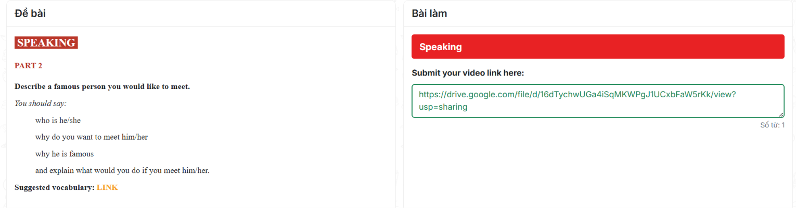

Đề bài
SPEAKING
PART 2
Describe a famous person you would like to meet.
You should say:
- who is he/she
- why do you want to meet him/her
- why he is famous
- and explain what would you do if you meet him/her.
Suggested vocabulary: LINK
Ảnh bản gốc

Bài làm
Submit your video link here:
Số từ: 0